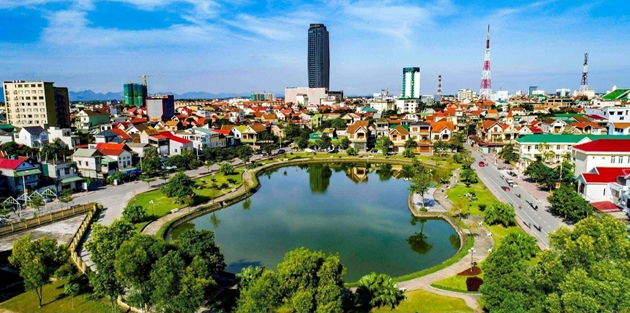

HELLO, IT'S NICE TO MEET YOU
Hà Tĩnh là một tỉnh ở dải đất miền Trung, nằm trong vùng du lịch Bắc Trung bộ, phía bắc giáp Nghệ An, phía nam giáp Quảng Bình, phía tây giáp Lào, phía đông giáp biển Đông với bờ biển dài 137km. Ðịa hình đa dạng, có đủ các vùng đồi núi, trung du, đồng bằng và biển.Đồng bằng có diện tích nhỏ bị chia cắt bởi các dãy núi và sông suối. Hà Tĩnh có tới 14 con sông lớn nhỏ và nhiều hồ nước. Là tỉnh nằm trong khu vực nhiệt đới, gió mùa nóng ẩm, mưa nhiều. Nhiệt độ trung bình năm là 23,7ºC.
Văn hóa ẩm thực của tỉnh Hà Tĩnh phản ánh sự đa dạng và phóng khoáng của vùng đất này. Được ảnh hưởng bởi cả yếu tố địa lý và văn hóa dân tộc,
ẩm thực Hà Tĩnh mang trong mình những đặc trưng riêng biệt, đồng thời cũng phản ánh sự phong phú và đa dạng của ẩm thực miền Trung Việt Nam.
Một trong những điểm nổi bật của ẩm thực Hà Tĩnh là sự kết hợp tinh tế giữa nguyên liệu địa phương và kỹ thuật chế biến độc đáo. Các món ăn tại đây thường được chế biến
từ các nguyên liệu đơn giản như cá, tôm, thịt heo, gà kết hợp với rau cải và các loại gia vị tự nhiên như mắc khén, mắc mật, nước mắm.
Hãy để VN Foods giúp bạn hiểu hơn về văn hoá ẩm thực nơi đây nhé!